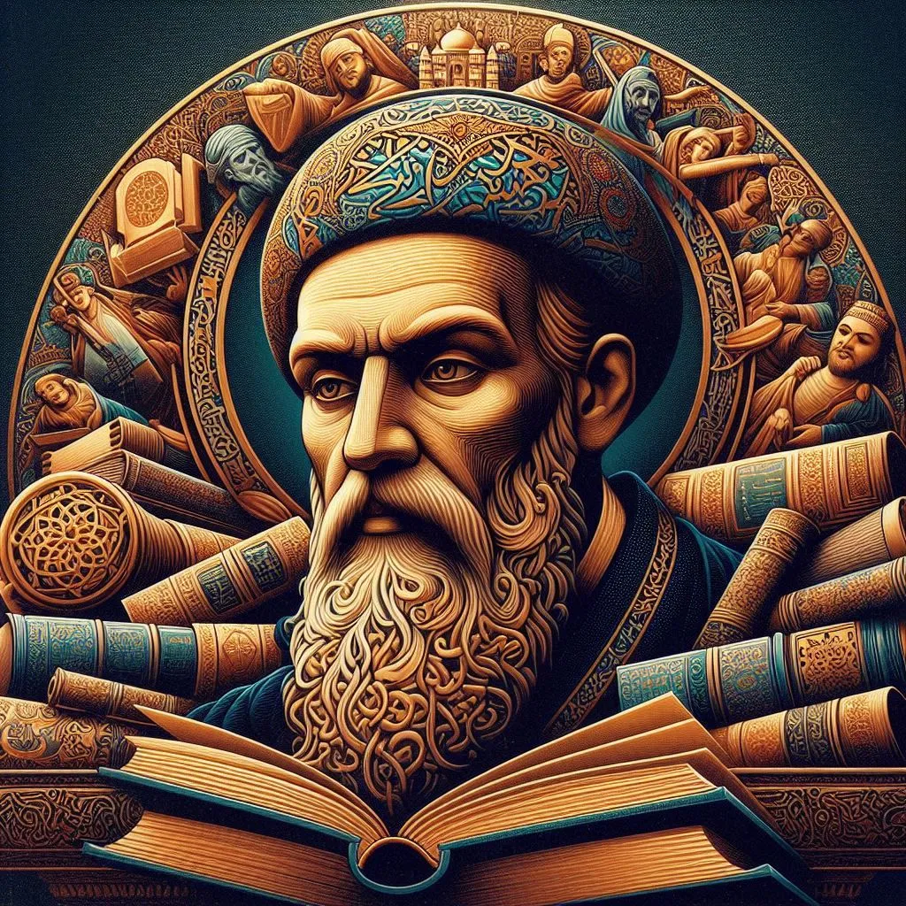
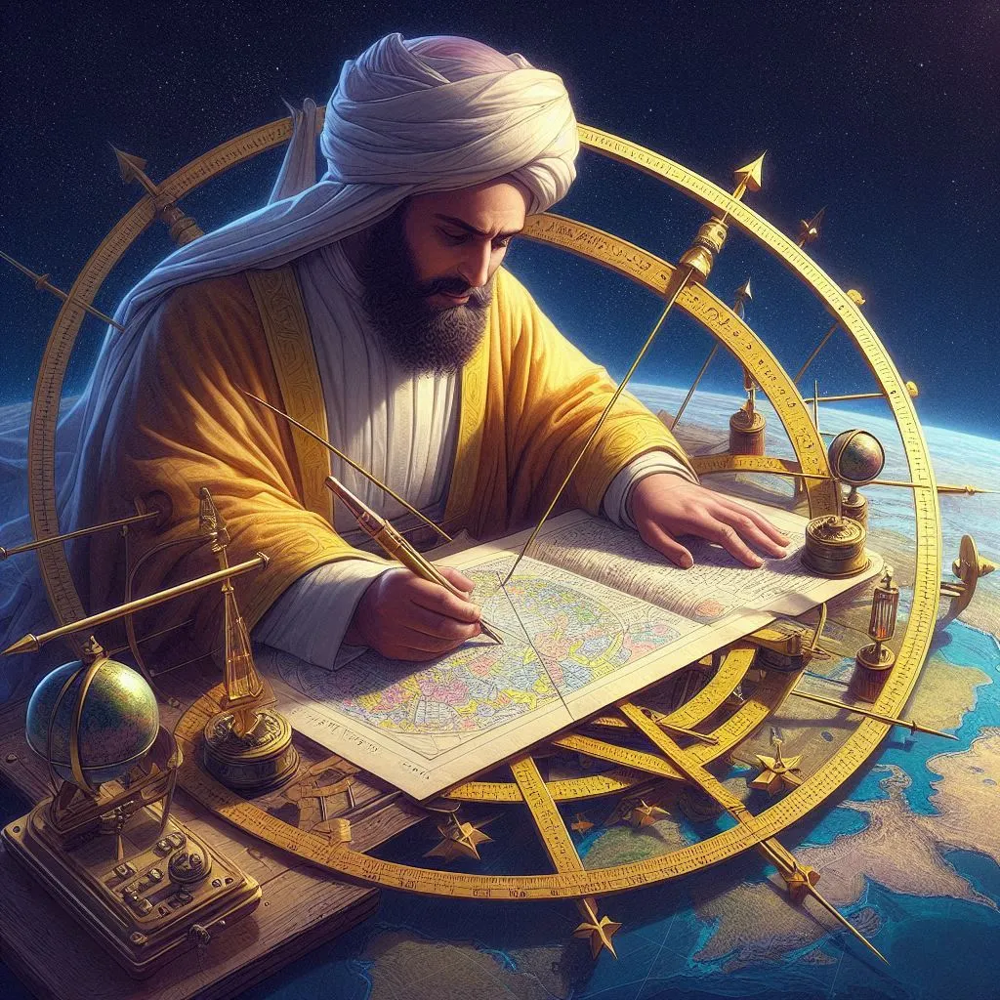
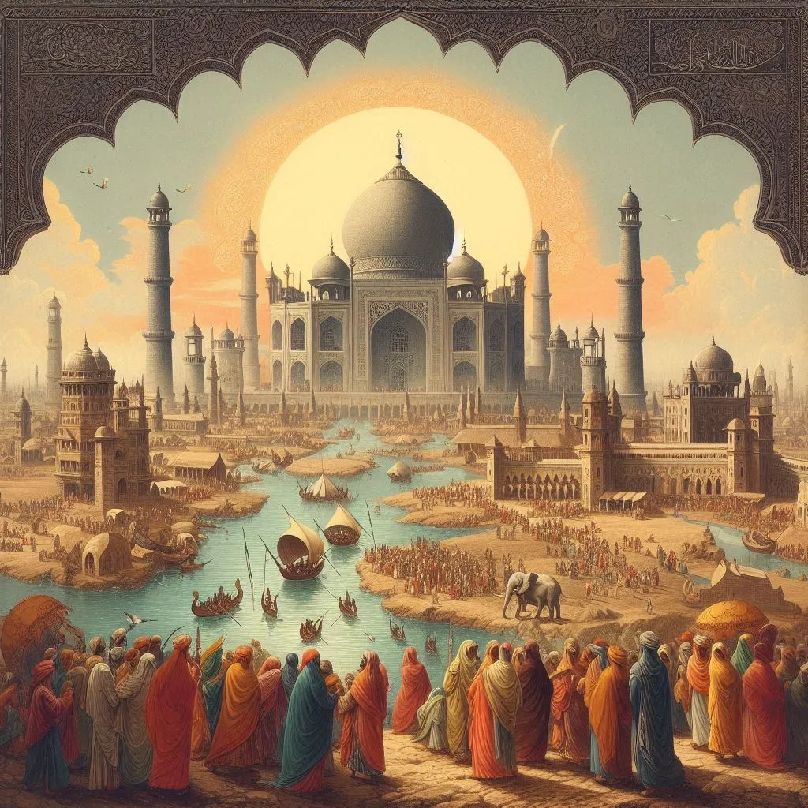
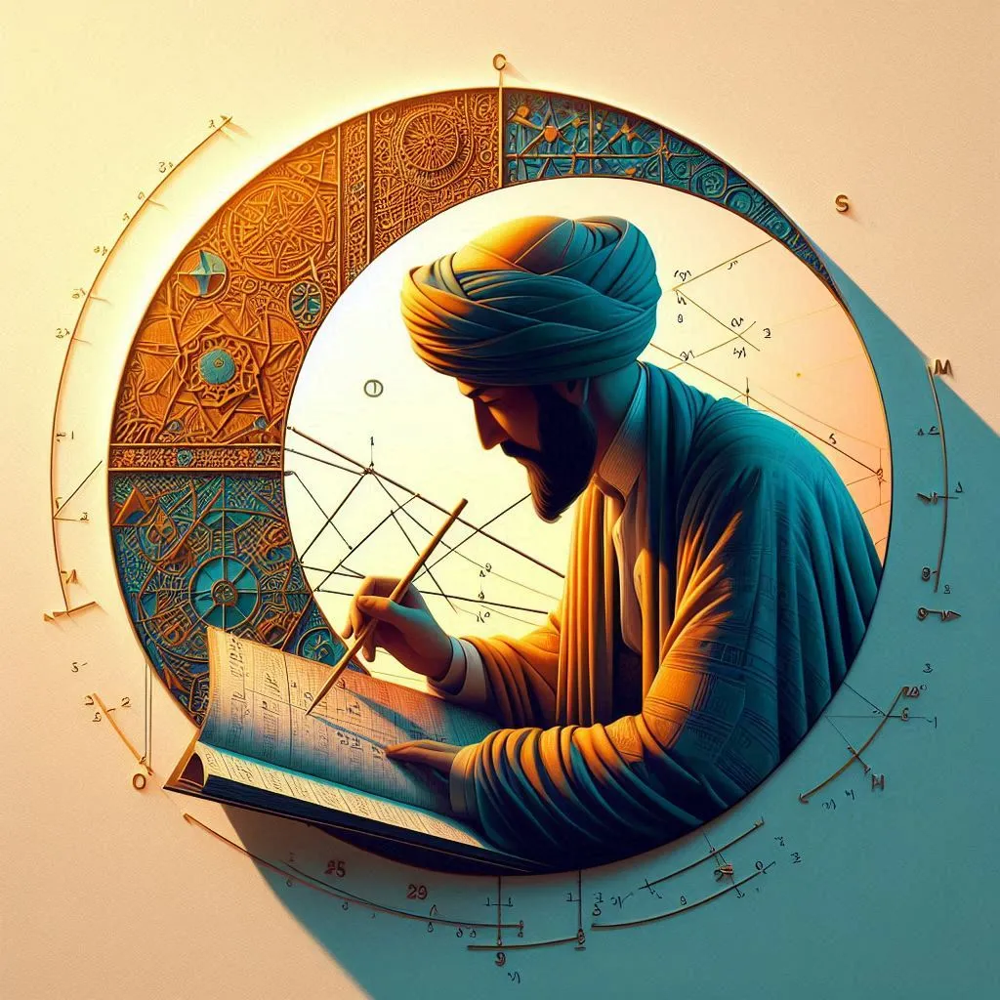

Ia dianggap sebagai 'Bapak Perbandingan Agama' karena pendekatannya
yang objektif dalam mempelajari berbagai kepercayaan dan praktik
budaya

Al-Biruni mengembangkan metode trigonometri untuk mengukur keliling
bumi dengan akurasi tinggi, mendekati nilai modern

Melalui karyanya 'India', Al-Biruni memberikan deskripsi mendetail
tentang geografi, budaya, dan agama di India

Ia mempelajari sudut dan trigonometri, bekerja pada bayangan dan
tali busur lingkaran, serta mengembangkan metode untuk membagi sudut
menjadi tiga bagian
Hindus believe that there is no country but theirs, no nation like
theirs, no kings like theirs, no religion like theirs, no knowledge
like theirs.